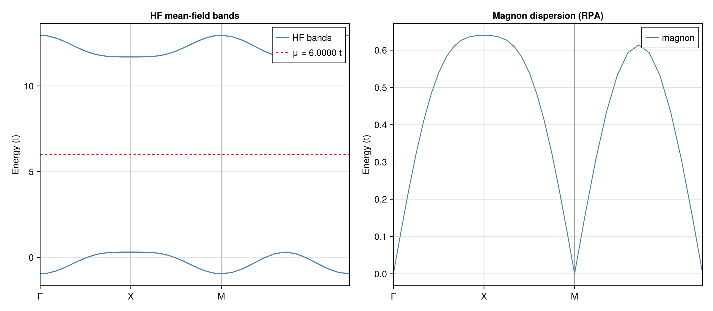

Example: AFM Magnon Dispersion on Square Lattice
This example computes the magnon (spin-wave) dispersion of the Néel antiferromagnet on a square lattice using the random phase approximation (RPA) on top of Hartree-Fock. It validates solve_ph_excitations via the Goldstone theorem: the spontaneous breaking of SU(2) spin symmetry by Néel order must produce a gapless magnon at $\mathbf{q} = \Gamma$.
Physical Model
\[H = -t \sum_{\langle ij \rangle,\sigma} (c^\dagger_{i\sigma}c_{j\sigma} + \text{h.c.}) + U \sum_i n_{i\uparrow}n_{i\downarrow}\]
\[t = 1\]
: nearest-neighbor hopping on the square lattice\[U = 12\]
: on-site Hubbard repulsion ($U/t = 12$, strong-coupling regime)- Half-filling: 2 electrons per magnetic unit cell
A $\sqrt{2}\times\sqrt{2}$ rotated magnetic unit cell is used with lattice vectors $\mathbf{a}_1 = (1,1)$, $\mathbf{a}_2 = (1,-1)$, containing two sublattices A and B. Each sublattice carries spin-up and spin-down orbitals, giving 4 orbitals per cell.
At large $U/t$, the Hartree-Fock ground state spontaneously develops Néel order with antiparallel moments on A and B sublattices. The low-energy collective excitations are magnons — transverse spin waves that restore the broken SU(2) symmetry — with a gapless Goldstone mode at $\mathbf{q} = \Gamma$.
Method
- Hartree-Fock: momentum-space unrestricted HF (
solve_hfk) on a $12\times12$ $k$-grid with symmetry-breaking restarts to find the Néel ground state. - RPA magnon spectrum:
solve_ph_excitationswithsolver=:RPAcomputes the particle-hole excitation spectrum along the high-symmetry path $\Gamma \to X \to M \to \Gamma$ (in the original square-lattice BZ).
The RPA diagonalizes the Bosonic BdG matrix
\[\mathcal{M}(\mathbf{q}) = \begin{pmatrix} A(\mathbf{q}) & B(\mathbf{q}) \\ -B(\mathbf{q})^\dagger & -A(-\mathbf{q})^* \end{pmatrix}\]
where $A$ and $B$ are built from the HF eigenstates and the two-body interaction. The eigenvalues give the magnon energies $\omega(\mathbf{q})$.
Code
# Magnetic unit cell: √2 × √2 rotated square lattice
a1 = [1.0, 1.0]
a2 = [1.0, -1.0]
unitcell = Lattice(
[Dof(:cell, 1), Dof(:sub, 2, [:A, :B])],
[QN(cell=1, sub=1), QN(cell=1, sub=2)],
[[0.0, 0.0], [1.0, 0.0]];
vectors = [a1, a2]
)
dofs = SystemDofs([Dof(:cell, 1), Dof(:sub, 2, [:A, :B]), Dof(:spin, 2, [:up, :dn])])
onebody = generate_onebody(dofs, bonds(unitcell, (:p,:p), 1),
(delta, qn1, qn2) -> qn1.spin == qn2.spin ? -t : 0.0)
twobody = generate_twobody(dofs, bonds(unitcell, (:p,:p), 0),
(deltas, qn1, qn2, qn3, qn4) ->
(qn1.spin == qn2.spin) && (qn3.spin == qn4.spin) &&
(qn1.spin !== qn3.spin) ? U/2 : 0.0,
order = (cdag, :i, c, :i, cdag, :i, c, :i))
# Hartree-Fock ground state
kpoints = build_kpoints([a1, a2], (12, 12))
n_elec = 2 * length(kpoints)
hf = solve_hfk(dofs, onebody, twobody, kpoints, n_elec;
n_restarts = 10, field_strength = 1.0, n_warmup = 10, tol = 1e-12)
# RPA magnon spectrum along Γ → X → M → Γ
B_mat = 2π * inv(hcat(a1, a2))'
reciprocal_vecs = [B_mat[:, 1], B_mat[:, 2]]
ph = solve_ph_excitations(dofs, onebody, twobody, hf, qpoints, reciprocal_vecs;
solver = :RPA)Goldstone theorem check
At $\mathbf{q} = \Gamma = (0,0)$, the lowest magnon eigenvalue must vanish (up to numerical precision). This is a necessary condition for a correct RPA implementation: the Goldstone mode reflects the spontaneous breaking of continuous SU(2) spin symmetry by the Néel state. A nonzero gap at $\Gamma$ would indicate an error in the interaction kernel or the Bosonic BdG solver.
Running the Example
# Step 1: HF + RPA calculation, save band/magnon data
julia --project=examples -t 8 examples/AFM_Magnon/run.jl
# Step 2: plot HF bands and magnon dispersion
julia --project=examples examples/AFM_Magnon/plot.jlrun.jl will:
- Solve the HF ground state for the Néel antiferromagnet
- Verify Néel order via the staggered magnetization
- Compute HF band structure along $\Gamma \to X \to M \to \Gamma$ and save to
hf_bands.dat - Compute the RPA magnon spectrum along the same path and save to
magnon.dat
plot.jl will read the data files and save docs/src/fig/magnon_dispersion.png.
Results

Left panel: HF mean-field band structure. The Néel order opens a gap at the magnetic zone boundary, splitting the bands into lower and upper Hubbard bands.
Right panel: RPA magnon dispersion. The lowest branch is gapless at $\Gamma$, confirming the Goldstone theorem. The magnon bandwidth is set by the exchange energy scale $J \sim 4t^2/U$.